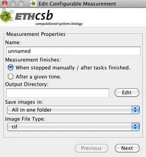
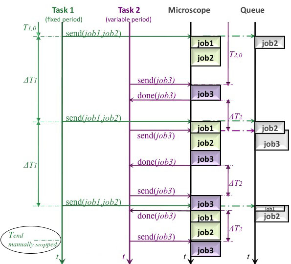

YouScope : Measurement Properties of an Advanced Measurement
This page last changed on Jun 01, 2011 by haclaudi.
Measurement Properties

Properties for identification and organization of the measured images
- Name: Measurement Properties for a Microplate Measurement
- Output Directory: Measurement Properties for a Microplate Measurement
- Save images in: Measurement Properties for a Microplate Measurement
- Image File Type: Measurement Properties for a Microplate Measurement
Timing parameters
- Measurement finishes - Time settings for the total running time of the imaging process: There are two possibilities to finish the measurement. It can be stopped manually, by choosing the option When finished manually/after tasks finished. The microscope repeats the imaging jobs of the tasks until the user stops the measurement. This is used, if maybe a change in the development of the cells has to be observed and the microscopist does not know, when the steady-state status is achieved. The other possibility is to define a time period, in which the tasks are repeated n-times (After a given time period).
|  | Figure 1: Flowchart of an advanced measurement. The execution of the task with fixed period and a variable period by the microscope is plotted. Task 1 and task 2 are printed in green and prink, respectively. The queue and the execution by the microscope are plotted in grey. The feedback of task 2 is displayed in light pink. The measurement can be finished by defining T_end is the total running time of both tasks or by stopping it manually, highlighted by an ellipse. |
{kind=link}
{kind=link}